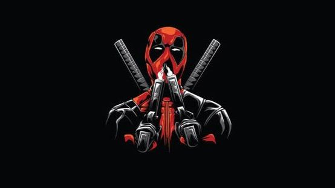
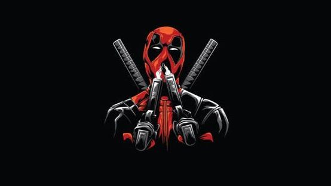

PS5: A Nova geração do PlayStation
Novidades do PlayStation 5
O PlayStation 5 é o novo console da Sony, com CPU AMD Zen 2, de 3,5 GHz, e o SSD personalizado de 825 GB, que proporciona carregamento praticamente
instantâneo dos jogos do PS5 instalados e segundo a Sony, o videogame mais rápido do mundo.
O PS5 será lançado em duas versões: um modelo padrão
com unidade de disco Blu-ray Ultra HD e uma edição digital sem unidade de disco. A experiência de jogo para ambos os modelos será a mesma.
O controle
sem fio DualSense que acompanhará o PlayStation 5, irá aprofundar a sensação de imersão durante os jogos com seu feedback tátil imersivo e gatilhos dinâmicos e
adaptáveis.
Saiba mais
Especificações
- Resolução 4K
- Suporte a 120hz
- HDR
- Raytracing
- SSD Ultrarrápido
Jogos

 
